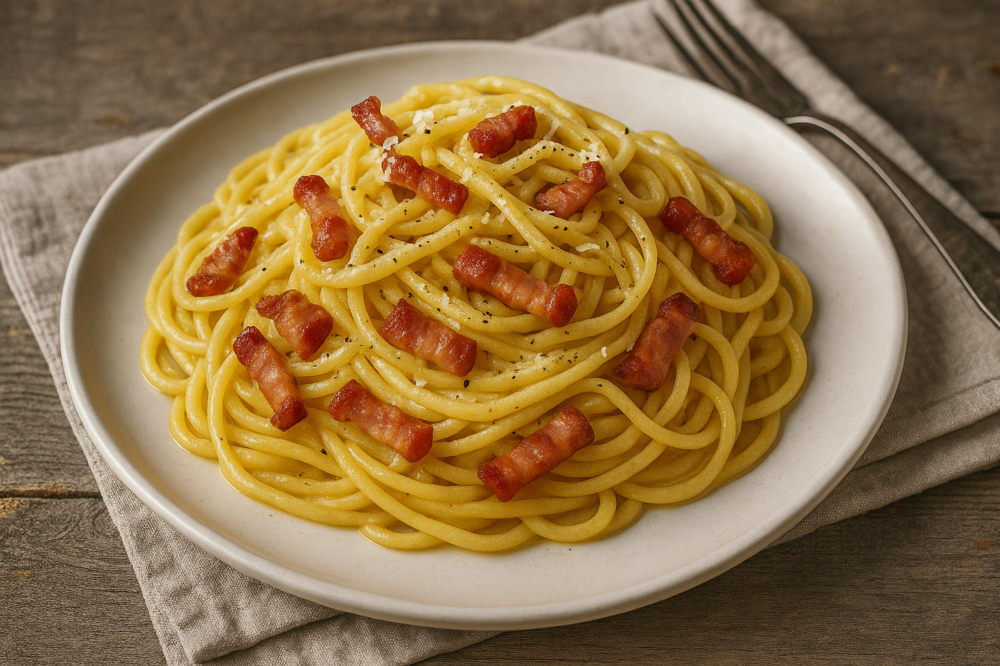

🍝 Spaghetti à la Carbonara
Une recette simple, rapide et délicieuse pour les amateurs de pâtes italiennes !
Ingrédients (pour 2 personnes)
- 200 g de spaghetti
- 100 g de lardons
- 2 jaunes d'œufs
- 50 g de parmesan râpé
- Sel et poivre
Préparation
- Fais cuire les pâtes dans de l’eau bouillante salée.
- Fais revenir les lardons à la poêle jusqu’à ce qu’ils soient dorés.
- Dans un bol, mélange les jaunes d’œufs avec le parmesan et un peu de poivre.
- Égoutte les pâtes, garde un peu d’eau de cuisson.
- Mélange les pâtes, les lardons et la sauce dans la poêle hors du feu.
- Ajoute un peu d’eau de cuisson pour lier la sauce. Servez chaud !